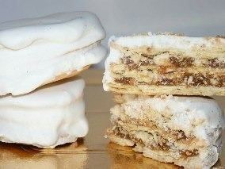

"Es el que más sobresale de todos los tipos de alfajores, porque su receta
es especial y diferente. Pero a la vez, única y deliciosa".

PARA LA COBERTURA
1 clara
250g. de azucar impalpable
1 chorrito de limòn
PREPARAIÓN
Para la masa: agregar los ingredientes secos primero (harina, sal) y los húmedos después
Dejar reposar la masa en un film o una bolsita 20' en la heladera.
Estirar la masa hasta que quede muy finita (casi transparente). Pinchar toda la superficie
con un tenedor y cortar las tapitas con un molde o vaso. Llevar al horno precalentado y fuerte 8 o 10'.
Rellenar con dulce de leche repostero y llevar al congelador
Glaseado: batir las dos claras con el azúcar impalpable y una cucharada de jugo de limón.
En una olla colocar el azúcar y el agua. Dejar que hierva hasta que quede líquido
y agregar en forma de hilo a la preparación anterior. Batir hasta que tome la consistencia deseada.
Dejar a los alfajores reposar 24hs después de glasearlos. Si te quieres saltear este paso,
lleva los alfajores ya glaseados al horno 5' hasta que el glass se seque, así, dejarlos descansar 5hs.